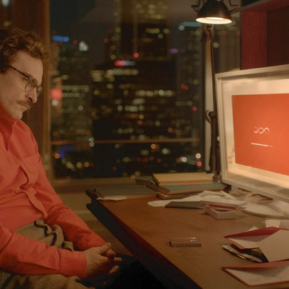
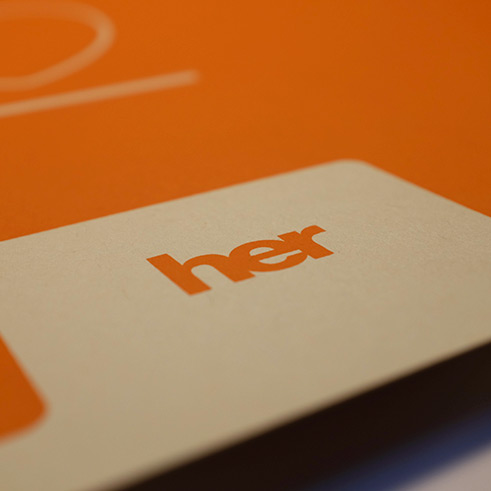
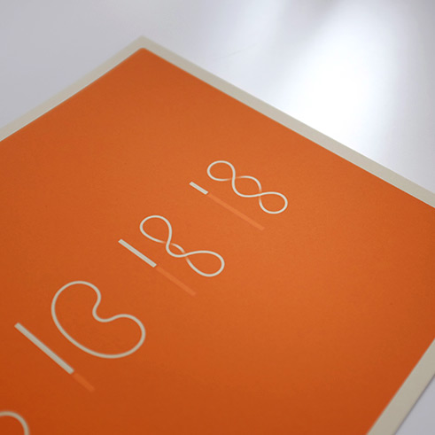

Graphic design Illustration Personal
Immediately after seeing Spike Jonze's 2013 film, Her, I was immediately inspired to create a conceptual movie poster. My goal was to portray the film's pivotal moment in an abstract and minimal manner, using symbols instead of photography or people.
Due to the nature of the screenprinting process, minor imperfections and variances in color and registration are possible
When Joaquin Phoenix's character, Theodore, first installs OS1 on his computer, the loading screen displays a hypnotizing, rotating ribbon accompanied by a progress bar. As the story unfolds, he begins to fall in love with the voice behind the OS's artificial intelligence. In the poster, I used the loading ribbon's form to convey love and transformation, two prominent themes in the story.


